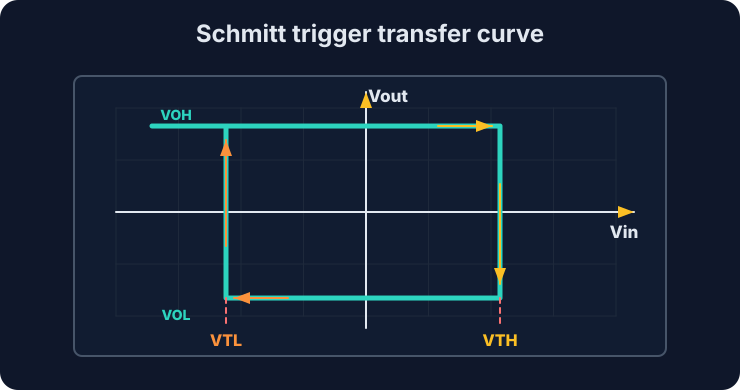
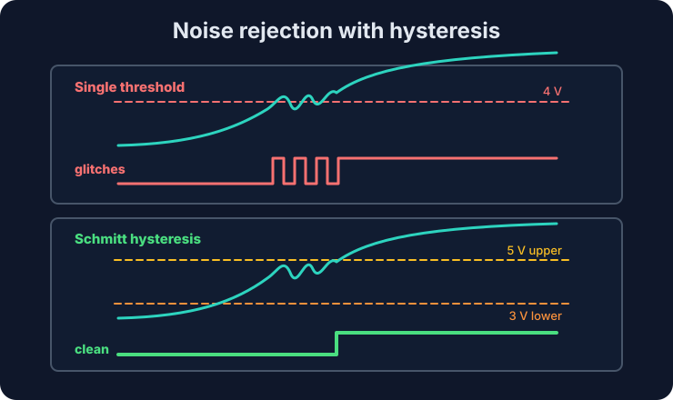
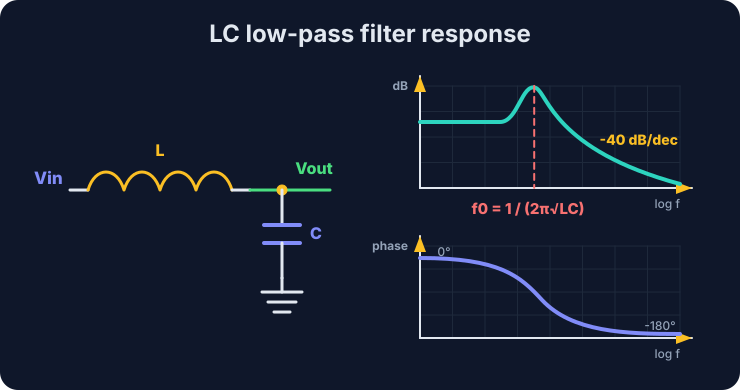
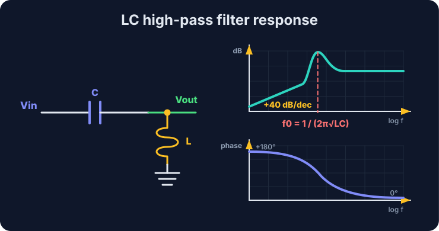

op-amps-comparators-and-triggers-draw-an-inverting-schmitt-trigger-cir / image_2
Schmitt trigger transfer curve schmitt_transfer

Prompt
A transfer curve graph. X-axis is V_in, Y-axis is V_out. It shows a rectangular hysteresis loop with arrows indicating direction. The right vertical drop happens at V_TH, and the left vertical rise happens at V_TL.
op-amps-comparators-and-triggers-draw-an-inverting-schmitt-trigger-cir / image_3
Noise rejection with hysteresis schmitt_noise_comparison

Prompt
A two-part graph showing the effect of noise. Top: A noisy sine wave crossing a single 4V threshold multiple times, resulting in a glitchy, rapid ON/OFF square wave below it. Bottom: The same noisy sine wave, but with two dashed threshold lines at 3V and 5V. The resulting square wave below it toggles cleanly only once when the wave completely crosses 5V.
filters-passive-lc-draw-an-lc-low-pass-filter-what-are-its-two-main-ad / image_1
LC low-pass filter response lc_low_pass

Prompt
Left: Schematic showing V_in -> Inductor -> Output node -> Capacitor -> Ground. Right: A Bode plot with a flat magnitude line, a sharp upward peak at f_c, followed by a steep downward slope (-40dB/dec). The phase plot drops from 0 to -180 degrees.
filters-passive-lc-draw-an-lc-high-pass-filter-explain-its-bode-plot-s / image_1
LC high-pass filter response lc_high_pass

Prompt
Left: Schematic showing V_in -> Capacitor -> Output node -> Inductor -> Ground. Right: A Bode plot showing magnitude rising at +40dB/dec with a sharp upward spike exactly at f_c, then flattening out at 0dB. The phase plot drops from +180 to 0 degrees.